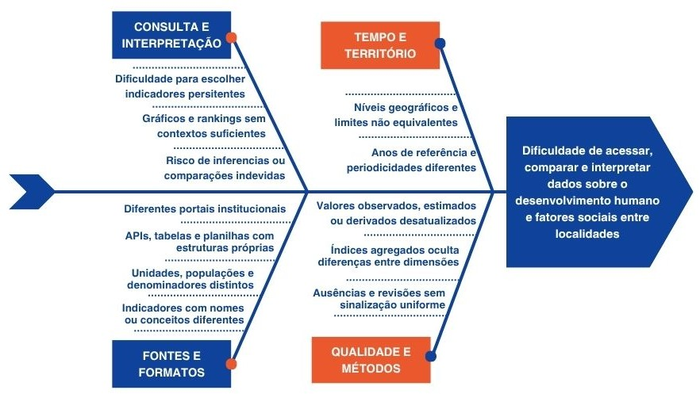

1. Visão Geral do Produto¶
1.1. Problema¶
Contexto: Os dados socioeconômicos brasileiros, como o Índice de Desenvolvimento Humano (IDH), são publicados por órgãos governamentais de forma descentralizada e em formatos estáticos brutos (CSV, planilhas complexas, PDF). (IBGE, [s.d.])
Problema encontrado: A fragmentação e a ausência de interfaces visuais dinâmicas criam uma barreira técnica, dificultando o cruzamento de dados e a análise comparativa por pesquisadores, jornalistas e gestores.
Figura 1 — Diagrama de Ishikawa das causas do problema.

Fonte: Elaborado por Fabiana Reis Souza (2026).
A Figura 1 detalha as causas-raiz desse problema. Observa-se que a dificuldade de acesso e interpretação apresenta-se em quatro frentes principais:
- Fontes e Formatos: devido à dispersão em portais distintos e incompatibilidade de APIs e tabelas;
- Qualidade e Métodos: lidando com dados desatualizados ou índices agregados que ocultam as dimensões reais;
- Tempo e Território: onde a defasagem de anos de referências e limites geográficos prejudica o cruzamento;
- Consulta e Interpretação: onde a falta de contexto induz o usuário a erros de inferência.
Para solucionar essas lacunas, a solução de software proposta é a construção de uma plataforma centralizada — dashboard — baseada em ciência de dados. A aplicação extrairá os dados brutos e os converterá em gráficos interativos e mapas, delimitados por estados, reduzindo o trabalho operacional e entregando o dado já tratado visualmente para o usuário.
1.2. Declaração de Posição do Produto¶
O Brasil Hub surge com a proposta de preencher uma lacuna técnica e de usabilidade no acesso a dados socioeconômicos do Brasil. Atualmente, as principais fontes de dados socioeconômicos do país são portais oficiais, como o IBGE e o Atlas do Desenvolvimento Humano no Brasil (PNUD, Ipea e FJP). Essas fontes são confiáveis e trazem indicadores como o IDHM, mas os dados ficam espalhados em portais distintos, com formatos próprios, o que dificulta a comparação (ATLAS DO DESENVOLVIMENTO HUMANO NO BRASIL, [s.d.]).
O diferencial do Brasil Hub é reunir os indicadores em uma única interface, com filtros por estado e por dimensão do IDH e recursos de acessibilidade, além de comparação lado a lado e exportação de dados, se houver tempo (COULD). A posição exclusiva do Brasil Hub é democratizar essa análise, entregando inteligência visual imediata. A Tabela 3 resume o posicionamento estratégico da plataforma em relação ao seu público e às alternativas competitivas.
Tabela 3 — Declaração de posicionamento do Brasil Hub.
| Elemento | Descrição |
|---|---|
| Para | Pesquisadores acadêmicos, jornalistas, gestores públicos e estudantes. |
| Necessidade | Superar a dificuldade técnica de encontrar dados sociais consolidados, atualizados e visualmente interpretáveis em fontes oficiais. |
| O Brasil Hub | É uma plataforma WEB interativa de visualização de dados (dashboard). |
| Que | Consolida índices sociais em gráficos, mapas de calor e rankings comparativos estaduais de forma rápida. |
| Ao contrário | De buscas manuais fragmentadas em portais governamentais que exigem download e tratamento prévio em planilhas. |
| Nosso produto | Trata e padroniza os dados e os entrega em uma interface web acessível no navegador. |
Fonte: Elaborado por Josef Wojtyla.
Conforme detalhado na Tabela 3, o diferencial competitivo primário da aplicação não é a geração de novos dados, mas sim a excelência na forma como eles são processados e apresentados. Ao automatizar a extração e aplicar tratamento de dados no back-end, o Brasil Hub elimina o retrabalho operacional dos pesquisadores e gestores, garantindo que o foco do usuário seja integralmente direcionado para a análise comparativa das problemáticas sociais.
1.3. Objetivos do Produto¶
Objetivo principal: Desenvolver um dashboard para centralizar e facilitar a visualização comparativa de fatores sociais do Brasil com enfoque nos dados estaduais.
Objetivos específicos:
- Tratar e padronizar bases de dados públicas (CSV do IBGE) e disponibilizá-las por meio de uma API;
- Implementar mapas de calor interativos com a biblioteca Leaflet;
- Fornecer filtros dinâmicos por estado e por dimensão do IDH (renda, educação e longevidade).
O objetivo principal é atendido pelos requisitos B-01 e B-06 da Tabela 13. O objetivo específico 1 é atendido por B-04 e B-05, o 2 por B-01 e o 3 por B-02.
1.4. Tecnologias a Serem Utilizadas¶
- Backend: Python com Pandas para manipulação massiva e limpeza dos dados brutos e FastAPI para expor os dados tratados de forma ágil e com documentação automática.
- Banco de dados: SQLite por sua natureza serverless, dispensando configuração de infraestrutura complexa, garantindo integração nativa com o ecossistema Python e atendendo ao princípio de simplicidade do projeto.
- Frontend: JavaScript para garantir a reatividade da interface aliado ao Leaflet para renderização dos mapas geográficos.
- Deploy e hospedagem: Vercel e GitHub Pages (documentação).
- Testes: Pytest para os testes de unidade da manipulação de dados no back-end Python e Jest componentes do front-end JavaScript.
- Documentação: MkDocs com Material Theme hospedado no GitHub Pages conforme infraestrutura padrão da disciplina.
- Canal de comunicação: WhatsApp para alinhamentos rápidos diários e GitHub Projects — Kanban — para o rastreamento oficial de Issues e Sprints.